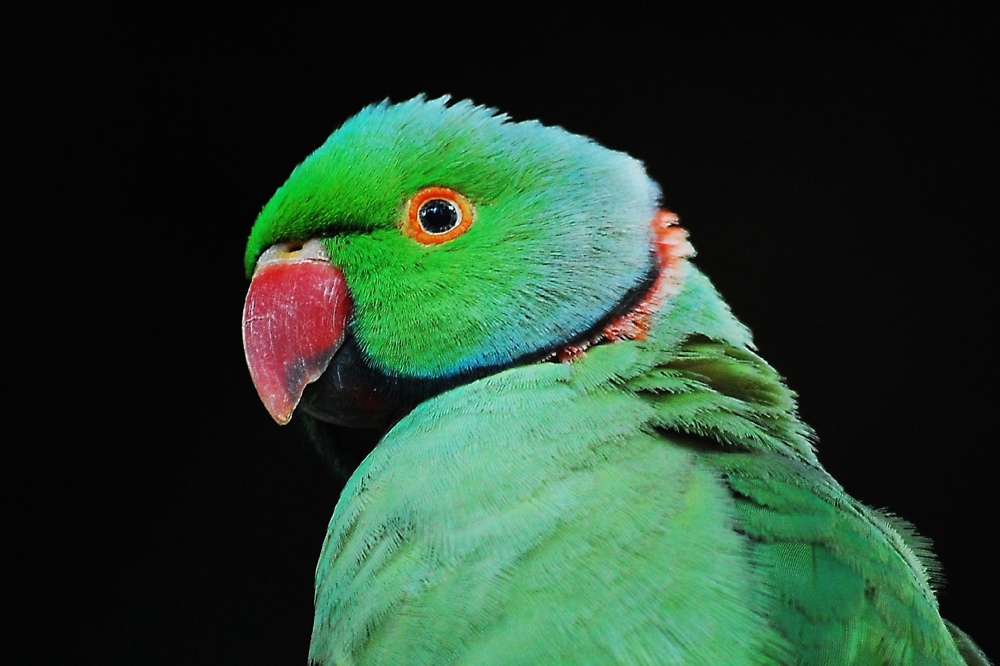

Parakeets |
The term American budgie is used when comparing budgies to the English budgie, which is a budgie that is bred for the show bench. It is a much bigger budgie with a larger head than the American budgie. American budgie and English budgie are not scientific classifications or formal names, just general terms used in the pet industry. A mutation, such as color or pattern, occurs naturally about why only a few are mentioned. While both sexes make good pet birds, males tend to be better talkers and females are known to be quieter but also more aggressive and playfu |
|
Alexandrine |
The Alexandrine Parakeet hails from India, Bangladesh, Sri Lanka, and other parts of Southeast Asia. It looks like a small parrot in feature. Its head is green with grayish-blue cheeks. It has two colorful rings: one a black neck ring and the other a pink nape ring. Alexandrine parakeets are quite social with one another, can be heard for miles because of its noisy chatter, and can scream as loud as the Rose-ringed Parakeet but in a much deeper tone. |
|
Barred |
Barred Parakeets are similar to Monk Parakeets in that they can adapt to extreme changes in weather. In fact, they have been observed enjoying bathes in melted snow puddles. It lives in the mountains and forests high above sea level mostly in Central America and sleep on very high perches in the forest. It's difficult to discern a male Barred Parakeet from a female one. They are green and black birds. |
 |
Blue Crowned (Conure) |
The Blue Crowned Parakeet is a larger type of parakeet measuring almost 14.5 inches in length and is native to South America. They are typically green birds but do have blue foreheads, crowns, cheeks and ears. They like to live in the grasslands and on the outskirts of forests in dry patches. |
|
Carolina |
The Carolina Parakeet, the only parakeet type native to the Eastern United States, is now extinct due not to farmer outrage in the late 1800's when the Carolina Parakeets took advantage of the crops at their disposal. Their chirping and eating was a minor disturbance. In fact, they might have succumbed to poultry disease and a shrinking living space (much of their forest habitat was cut down). |
|
Green |
The Green Parakeet is native to Mexico and Nicaragua but have in recent times established habitats in southeast Texas. It has a green body with a yellow beak. It eats seeds, some fruits and corn and thus stays close to swampy forests and woodlands. |
|
Monk also known as Quaker |
Monk parakeets are what I like to call Survival of the Fittest Parakeets. These birds are hearty and tough and can live 3x-4x longer than a typical parakeet - up to 35 years of age. They are native to South American mountains and can withstand extreme changes in temperatures. They will survive in Boston-type cold climates like a Barred Parakeet and in arid desert regions, as well. Typically, Monk parakeets are green like their Australian cousins but with grey feathers. |
|
Pacific |
The Pacific Parakeet is native to just Nicaragua and its body is solid green without the black undulated markings of a typical budgie. |
 |
Red-Masked |
The Red-Masked Parakeet looks like a small parrot because of the red Robin from "Batman and Robin" type mask it wears on its face. It's native to Ecuador and Peru. They are larger birds - about 13 inches in length - but are not as long as the Blue-Crowned Parakeet. Their bodies are bright green and they live on the edges of forests. |
|
Red-Breasted |
The Red-Breasted Parakeet is native to the many thousands of islands that comprise Indonesia. They have green bodies with a black ring around its nape with a red patch that extends from the nape to the breast. It also has a distinctive black band extending across its cere to each eye, again somewhat reminiscent of Robin from "Batman and Robin". |
|  |
Rose-Ringed also known as Hawaiian Parakeet |
The Rose-Ringed Parakeet is known for three quite distinguishable features: a red beak, a black ring around their neck and under their beaks and a size close to 16 inches including tail feathers. In contrast, our typical yellow budgie at home is about 6 inches in length. The parakeet birds are also referred to as Hawaiian Parakeets because they now live there in the wild after a manmade introduction years ago. |
|
Traditional/English |
Traditional parakeets are small multi-colored parakeets measuring about 6 inches in length including tail feathers. They are native of Australia. They were all initially green in color but cross-breeding now offers consumers many different color options when choosing a pet parakeet. |